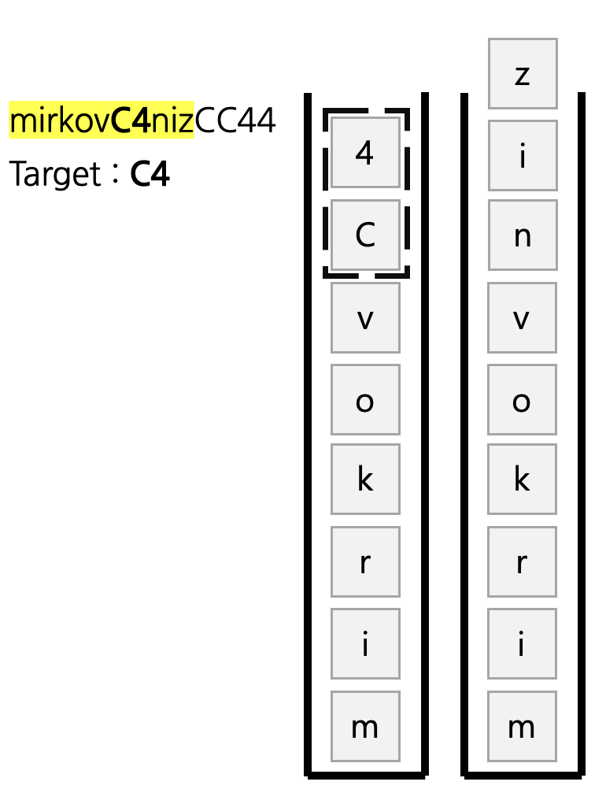
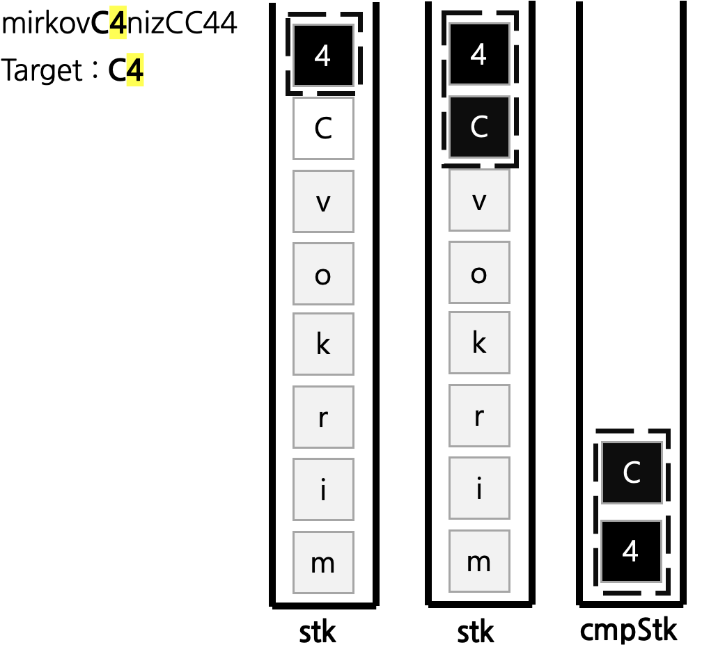

접근1 문자열 탐색 후 폭발 문자열을 제거해 나가는 방식
입력으로 주어진 문자열 ex) mirkovC4nizCC44 에서 폭발 문자열 ex) C4 이 탐색된다면 기존 문자열에서 폭발 문자열이 탐색되지 않을 때 까지 지속적으로 삭제해 나간다.
* 단순 문자열 탐색 O(N^2)
* 1. 입력받은 문자열에서 폭발 문자열이 탐색 되는 지 확인
* 2. 폭발 문자열이 존재한다하면 해당 문자열을 제거 후, 새로운 문자열 생성
* -> 문자열이 비어 있거나, 폭발 문자열이 존재하지 않을 때 까지 다음 동작을 반복.
위와 같은 방식은 문자열 내부에서 폭발 문자열을 탐색하는 과정에서 for 문이 2번 중첩 되기에 O(N^2) 만큼 시간 복잡도가 소요되게 된다.
그러나 문제에서 제시한 문자열의 최대 길이는 1,000,000 이기에, O(N^2) 알고리즘으로 풀이 시 대략 1조번의 연산이 수행된다.
따라서 해당 알고리즘으로 문제를 풀이하면 시간 초과가 발생한다.
접근2 STACK 자료구조를 사용한 방식
따라서 시간 복잡도를 최소화 하기 위해 STACK 자료구조를 사용하여 문자열을 받는 즉시 처리하도록 로직을 변경했다.
다음과 같이 문자열을 입력받을 때 마다 폭발 문자열을 탐색하면 문자열의 길이 즉, O(N) 만에 문제를 풀이할 수 있다.

로직은 다음과 같다.
만약 폭발 문자열 C4의 마지막 글자 4 가 스택에 들어온다면 해당 글자를 기준으로 폭발 문자열의 길이 만큼 새로운 스택에 추가한다.

그 다음 cmpStk에 들어있는 값과 폭발 문자열을 비교하여, 동일하다면 그대로 제거해 주면 되고 동일하지 않다면 다시 기존 스택에 추가해 준다.
이 과정을 문자열의 길이 만큼 반복한 뒤 기존 스택의 내용을 거꾸로 출력해 주면 된다.
https://github.com/novvvv/PS/blob/main/BOJ/202408/BOJ9935.java
PS/BOJ/202408/BOJ9935.java at main · novvvv/PS
알고리즘 문제 풀이 코드 모음. Contribute to novvvv/PS development by creating an account on GitHub.
github.com